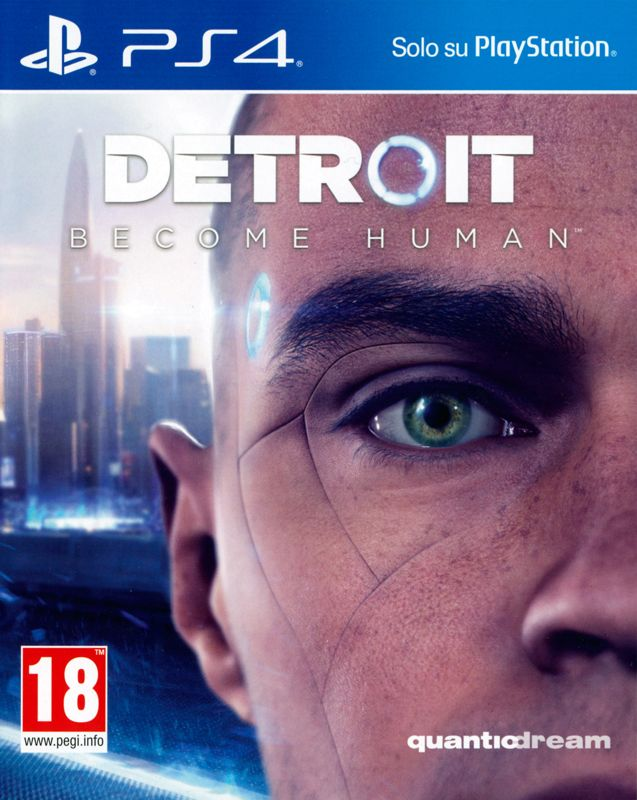
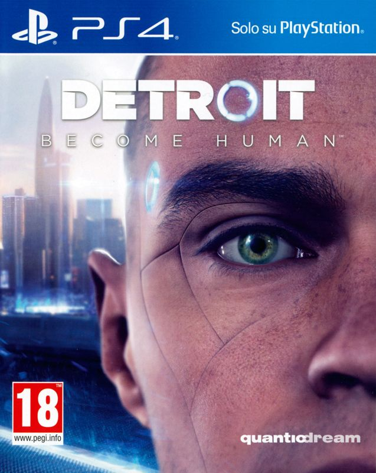
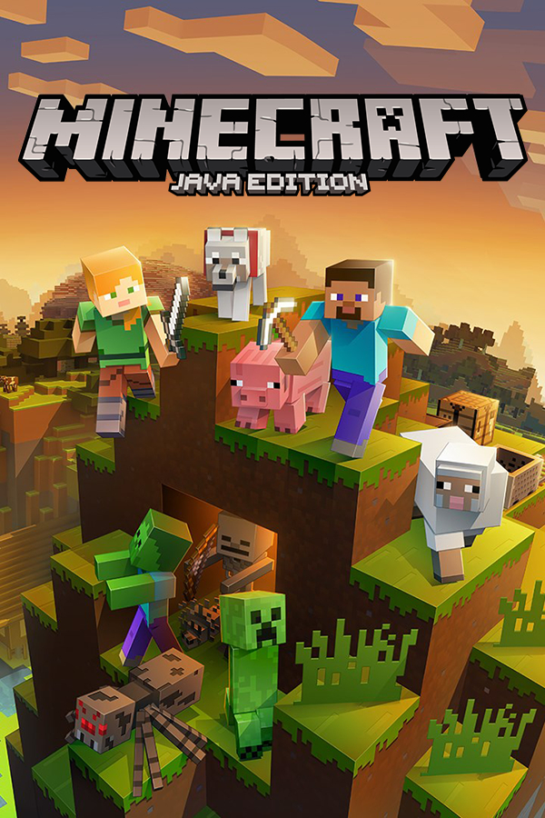
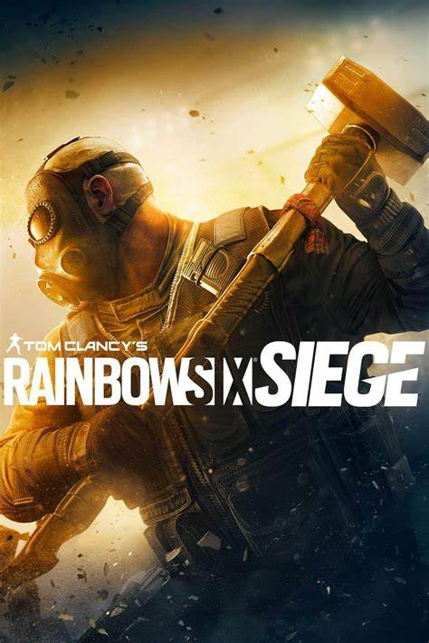
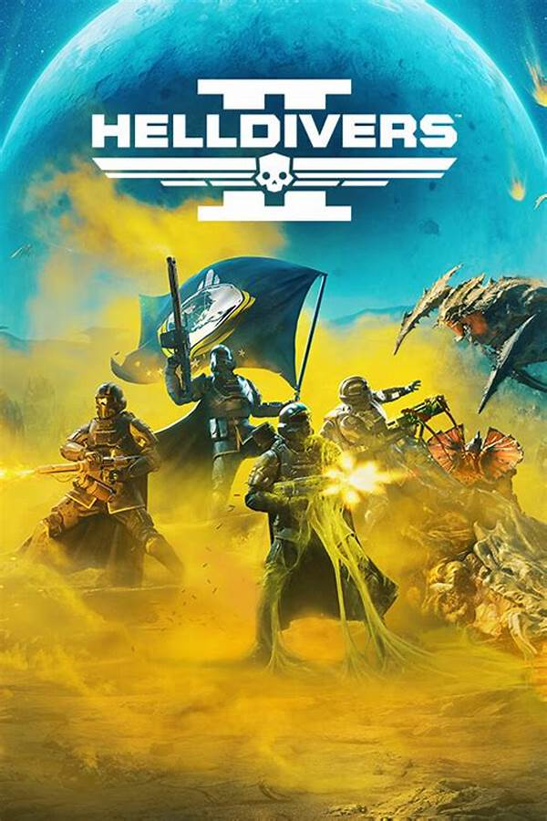
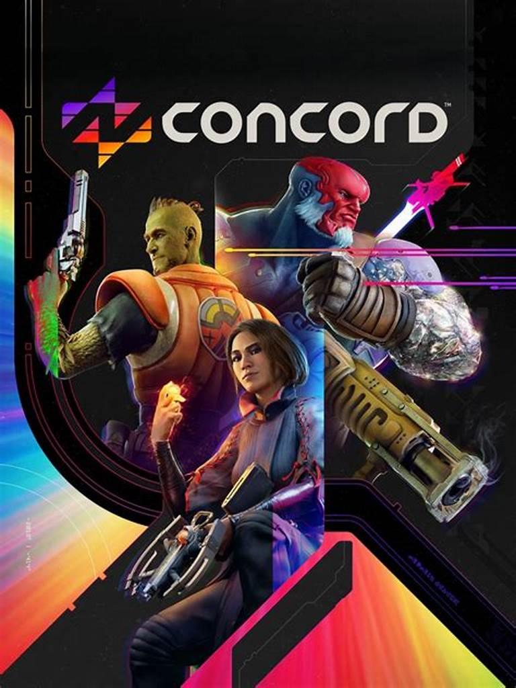
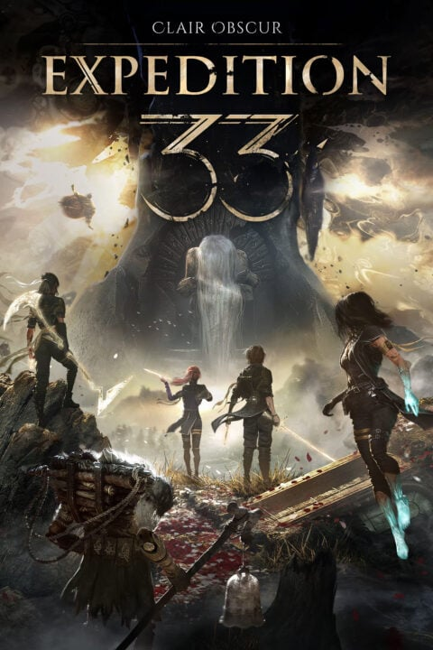

LA BELLEZZA DEI VIDEOGIOCHI
Quanto è divertente tornare da una lunga giornata e voler solo scollegarsi da quella realtà per distrarsi con altri mondi, storie e avventure con i videogiochi?
I videogiochi single player non sono solo un modo per divertirsi però, ma sono anche un modo per dare un messaggio attraverso storie di personaggi, che a parer nostro è molto più valido di qualunque libro o prodotto cinematografico, poiché il videogioco ti immerge completamente nei panni del protagonista e, in alcuni giochi, ti fa pure prendere le scelte, dando a te le redini della storia e le conseguenze. Ad esempio "Red Dead Redemption 2", "Detroit Become Human.", la saga di "Assassin's Creed", "Dark Souls" e molti altri.
 
 

I giochi multiplayer, invece, Insegnano a te e ai tuoi compagni la cooperazione, il gioco di squadra e stringe i legami con gli amici. Ad esempio "Minecraft", "Rainbow Six Siege", "Helldivers II" e "R.E.P.O.".

IL PROBLEMA DELLE ECCESSIVE MICROTRANSAZIONI
Il problema sorto negli ultimi anni nella videoludica mondiale sono le case produttrici più grandi che, essendo diventate troppo ricche, pensano solo al guadagno creando nuovi giochi con eccessive microtransazioni che, anche dopo aver comprato il gioco, ti bloccano alcuni prodotti (come costumi, mappe, e pure abilità, rendendolo "pay to win", ossia "paga per vincere") nel gioco sbloccabili solo sborsando. Un altro problema è quello della eccessiva "inclusività" che, se esagerata al midollo, rende i giochi ridicoli e inguardabili.
Un esempio di casa produttrice del genere è la Ubisoft, famosa per giochi come la saga di Assassin's Creed e Watch Dogs, che di recente ha creato un gioco sparatutto pieno zeppo di microtransazionie con personaggi eccessivamente "inclusivi": "Concord".

Inutile dire che il gioco in questione è fallito dopo molto poco per la mancanza di originalità, il solito shooter game con eroi con abilità uniche, come Rainbow Six Siege, Valorant, Overwatch e tanti altri giochi del genere, di cui il mercato videoludico è più che saturo.
Il problema principale è che di recente non escono più giochi originali poiché le case produttrici più grandi non pensano all'esperienza del giocatore, ma a riempirsi le tasche. Per questo motivo molti videogiocatori stanno tornando a vecchi classici come "Resident Evil", "Devil May Cry", "Assassin's Creed" (quelli vecchi), "Minecraft", "Grant Theft Auto" e molti altri.
ECCEZIONI
Esistono delle eccezioni nei giochi usciti di recente, poiché nelle classifiche di Steam (piattaforma di distribuzione digitale), al posto che i soliti AAA uno identico all'altro, stanno salendo giochi come "Clair Obscur: Expedition 33" creato dalla casa produttrice Sandfall Interactive, formata da circa 30 persone, che si sono separate dalla Ubisoft per creare la loro casa produttrice. Il gioco appena citato è stato veramente apprezzato dalla critica per aver offerto una storia più che originale, una meccanica di gioco mai vista, un misto tra combattimento a turni e quick time event che si fondono insieme in combattimenti più che divertenti e accompagnati dalla grafica mozzafiato.

Qui una CLASSIFICA dei migliori giochi (secondo a nostra opinione) migliori secondo catergorie.
Qui i nostri giochi preferiti.